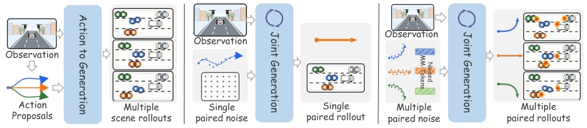
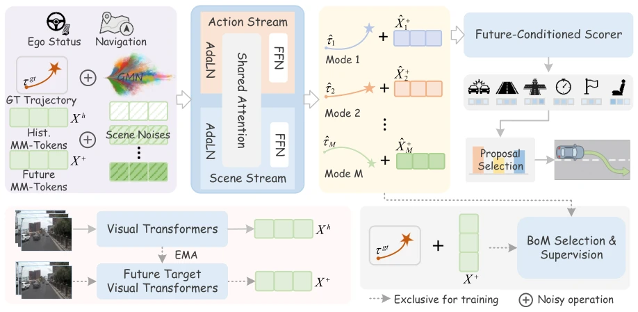
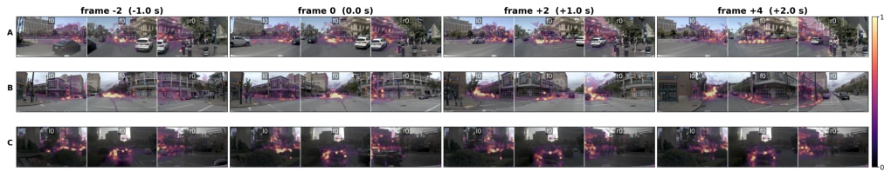
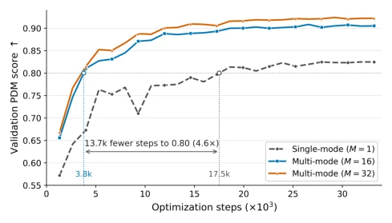

This MM-Future indeed achieved a new high on NAVSIM, with 94.0 PDMS looking quite impressive, but do not just look at the numbers. Its core pain point lies in that MM-Tokens are implicit representations; in the event of an accident, it is even difficult to explain "why planned this way", belonging to a typical black-box enhancement. Although multimodal joint modeling is introduced, the overhead of generating 64 hypotheses during inference is considerable, and 233ms latency may be tight in high-speed scenarios. Overall, this is a planner that is very capable in engineering, but there is still room for optimization in balancing interpretability and real-time performance, belonging to the type of "can run but hard to fix", suitable for scenarios where performance requirements outweigh transparency.
研究动机Motivation
自动驾驶决策需应对多模态不确定性，现有 World-Action Models (WAMs) 存在明显割裂。级联式方法如 DriveLaW (Xia et al. 2026) 虽支持多模式，但场景与动作单向影响，下游无法修正上游；联合式方法如 DriveFuture (Hong et al. 2026) 虽能双向交互，却通常只生成单一对假设。这导致模型无法同时覆盖多种博弈结果（如路口抢行或让行）。例如在 NAVSIM (Dauner et al. 2024) 的复杂交互中，单一假设难以捕捉潜在风险。因此，亟需一种既能多模式覆盖又能双向耦合场景 - 动作演化的框架，以解决现有 WAM 在模式覆盖与交互深度上的不足。
Autonomous driving decision-making must address multimodal uncertainty, yet existing World-Action Models (WAMs) exhibit significant disconnection. Cascaded methods such as DriveLaW (Xia et al. 2026) support multimodality, but scene and action influence is unidirectional, preventing downstream from correcting upstream; Joint methods such as DriveFuture (Hong et al. 2026) enable bidirectional interaction, yet typically generate only a single pair of hypotheses. This results in the model being unable to cover multiple game-theoretic outcomes simultaneously (e.g., cutting in or yielding at intersections). For instance, in the complex interactions of NAVSIM (Dauner et al. 2024), a single hypothesis struggles to capture potential risks. Therefore, there is an urgent need for a framework that achieves both multimodal coverage and bidirectional coupling of scene-action evolution, to address the deficiencies of existing WAMs in mode coverage and interaction depth.

Figure 1: Comparison of WAM paradigms. We contrast two representative WAM paradigms with MM-Future, which jointly generates multiple paired scene–action hypotheses and uses compact MM-Tokens for efficient multi-mode rollout.
The overall Pipeline comprises three stages: compression, generation, and scoring. First, the MM-Encoder compresses multi-view video into planning-oriented MM-Tokens, reducing token propagation costs. Second, based on Conditional Flow Matching, multiple scene-action pairs are initialized from independent noise; bidirectional co-evolution is achieved via a modality-aware Transformer, where a shared attention mechanism allows actions to respond to scene changes and vice versa. Training employs a Best-of-Many (BoM) loss, supervising only the selected optimal pair to prevent multi-hypothesis collapse to the mean. Finally, the Future-Conditioned Scorer combines historical observations with future predictions to score and rank trajectories. This design ensures the diversity of generated hypotheses and the safety of decisions, while improving multimodal inference efficiency through MM-Tokens compression.

Figure 2: Overview of MM-Future. The MM-Encoder extracts historical MM-Tokens Xh, while an EMA target encoder provides future targets X+ during training. Starting from independent scene–action noises, the conditional flow generates M paired trajectory–future hypotheses, which are trained with BoM supervision and ranked by a future-conditioned scorer.

Figure 3: Visualization of MM-Token attention. Rows A–C show right-turn, left-turn, and low-light queued scenes. Warmer colors indicate higher attention values. Future frames are encoded only for visualization and are not used during inference.
Evaluated on NAVSIM v1/v2 and HUGSIM. On NAVSIM navtest, PDMS reached 94.0 and EPDMS 91.5, outperforming DriveFuture and DrivoR. On HUGSIM, zero-shot closed-loop HD-Score is 32.3, exceeding Latent-WAM (Wang et al. 2026b) by 3.4 points. Ablation experiments confirm that multimodal generation, bidirectional interaction, and the scorer are all effective. Convergence curves show multimodal training is 4 times faster than single-mode training. Regarding latency, 233ms under 64 hypotheses is not ultimate but acceptable. Overall, this indicates that the method improves planning performance while maintaining safety, with pronounced advantages especially in complex interaction scenarios.

Figure 4: Training convergence curve evaluated by PDMS on NAVSIM-v1 navval for single-mode (M=1) and multi- mode (M∈{16, 32}) training.